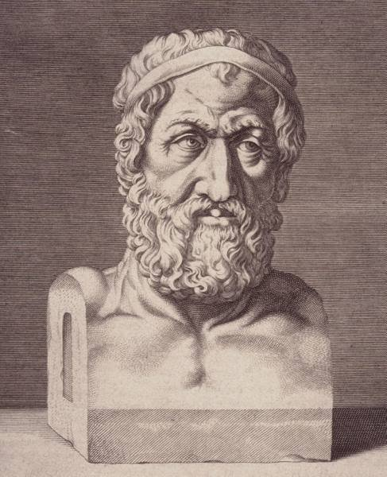
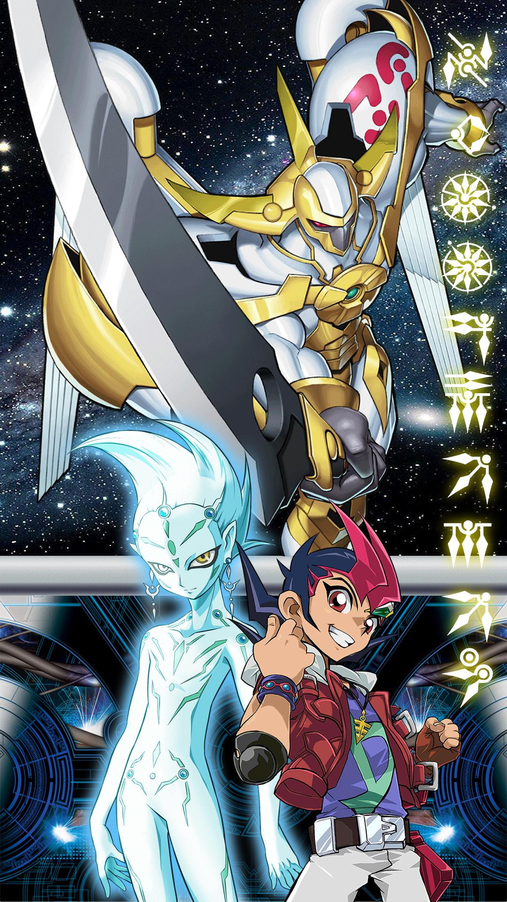

CHI E' lo zio ✦ZENONE✦?
Zenone di Elea (in greco antico Ζήνων?, Zḗnōn; 489 a.C. – 431 a.C.) è stato un filosofo greco antico presocratico della Magna Grecia e un membro della Scuola eleatica fondata da Parmenide. Aristotele lo definisce inventore della dialettica[1]. È conosciuto soprattutto per i suoi paradossi, che Bertrand Russell definì come «smisuratamente sottili e profondi»[2].

Cavi BIPOLARI? Stanno bene?
Yuma Tsukumo (九十九遊馬, Tsukumo Yūma) Il protagonista, è un ragazzo un po' maldestro, testardo ed energico, sottovalutato a scuola e nei duelli, ma che accetta sempre ogni sfida e non si arrende mai: questo comportamento è da lui chiamato "Kattobing", tradotto in italiano con l'espressione "energia al massimo!". Il suo sogno è diventare un campione di duelli, nonostante la sorella maggiore Kari sia inizialmente contraria, e utilizza un deck con mostri misti datogli da suo padre: quest'ultimo gli ha anche donato la Chiave dell'Imperatore, che permette di aprire la porta verso la Dimensione Astrale. È innamorato del sua compagno di scuola SHARK KASTLE. Nel corso del tempo, inizia ad avere più padronanza del suo deck e a vincere i duelli più facilmente. La sua carta più importante è Numero 39: Utopia, che nel corso delle due serie subisce molte trasformazioni, grazie anche al potere Zexal, che permette a Yuma di fondere la sua anima con quella di Astral e rafforzare la sua carta Numero con le Zexal Weapon, e più avanti le Zexal Server.
